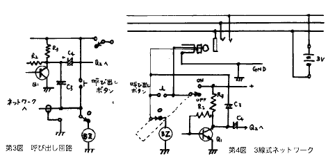

| ・戻る |
この#248の「有線電話」は任意に設置した通信線の任意なところに接続するだけで複数の局と交信できるインターカム(インターホン)です。 回路が
簡単ですから電子回路製作入門用として最適なキットで、次に示すようないろいろな特徴を持っています。
(1)あらかじめ設定してあるネットワーク(自由に張った2本の電線)の何処からでも運用が出来ること。
(2)ネットワークに使う電線は平行ビニル線又はツイストビニル線で良いこと。
(3)ハンドフリーの両通話方式であること。
(4)ネットワークの中で3人とか4人という複数の人間が話し合えること。
(5)回路が簡単なこと。
(6)音質が良いこと。
(7)電源が3V、3.5mAという省電力設計であること。
(8)ネットワークに直接侵入しない限り外部から盗聴されることがありません。
等です。
#248の回路図を第1図に示します。
マイクアンプ マイクロホンはECM(エレクトレットコンデンサマイク)を使用します。そのマイクの出力を2SC1815で増幅しま
す。 ここで増幅された音声信号をネットワークラインに乗せます。
出力アンプ ネットワークラインに乗っている信号をすべて増幅してイヤホンを鳴らせるアンプです。もちろん自分の出した音声信号もイヤ
ホンで聞くことが出来ます。
電源 UM-3を2本使って3Vとしています。呼び出し回路と連携する電源スイッチがついています。
(1)部品配置図を第2図に示します。
(2)1.5D2Vの先端にイヤホンプラグをハンダ付けします。
(3)少々込み合いますが7PのFCZトランジスタ基板に部品をハンダ付けします。
(4)ケースに入れる場合はイヤホンジャック、スイッチ、ブザー、呼び出し用押しボタンスイッチ、ECM、ネットワークライン接続用1.5D2V等を
ケースに取り付けます。
(5)ケースに取り付けた部品類と基板の間を配線します。
(6)上記とは別に適当な長さの平行ビニル線またはツイスト線の任意の場所にイヤホンジャックを複数個取り付けてネットワークとします。
(1)電池をつなぎ、電源スイッチを入れ、自分の声がイヤホンから聞こえることを確認してください。
(2)相手方も同じ確認を行ない異常が無いことを確認してください。
(３)お互いの電話器をネットワークにつなぎ会話がデきることを確認してください。
(1)2局間の交信であれば上記テストの方法で御使い頂けます。
(2)ネットワークのところどころにイヤホンジャックを設けて置けば、そのジャックのとれからも相手と交信が可能です。
(3)3人、4人と複数の人達であっても各々ネットワークに接続すれば複数間の交信が出来ます。
(4)家の中にネットワークを張って置き、赤ちゃんが寝た部屋のワッチをすることが出来ます。その場合は受信側のマイクの回路をはずし、出力段にアンプ
をつければベビーモニターになります。 FMワイヤレス方式だと外部から盗聴される恐れがありますが、この場合は有線ですから盗聴は不可能です。
呼び出し 呼び出し機能を設ける場合は第３図のような配線で可能です。
これはネットワークラインに3Vの電圧を流すことによって、この電圧で常時待機しているブザーが鳴る仕掛けになっています。 電源スイッチを入れることに
よってブザー回路は自動的に遮断されます。
呼び出された方もスイッチを入れればお互いに会話が出来るはずです。
3線式ネットワーク 各電話器に電源としての電池を持たず、ネットワークの中に 電源を設置する方法です。 回路を第４図に示します。 接続にはステレオプラグを使います。
